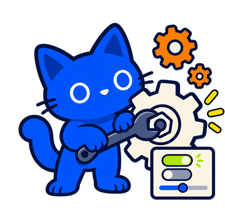

Tu cuenta
Configuración.
Tu perfil, lo que estudiás, qué se ve de vos y qué te avisamos.

Perfil público
Lo que ve cualquiera que entra a tu perfil.


Nombre visible
Max3 / 50
Usuario
devsproject.com/u/max
Es la dirección de tu perfil público.
Bio
Estudio Informática en la FI. Subo lo que me hubiera gustado encontrar cuando empecé.85 / 160
Tenés cambios sin guardar en la bio
DescartarGuardar cambios
Lo que estudio
Tu carrera ordena lo que ves en toda la página.
Año que cursás
2° añoMaterias que cursás ahora
Matemática Discreta×Teoría de la Información y la Comunicación×Desarrollo Sistemático de Programas×Probabilidades y Estadística×+ Agregar materia
Las usamos para mostrarte primero lo tuyo en Materias y Experiencias.
Privacidad
Qué se ve de vos en DevsProject.
Publicar reseñas y experiencias como anónimo
Queda elegido de entrada en cada formulario. Igual lo podés cambiar en cada publicación.
Mostrar mis aportes en mi perfil
Los materiales que publicaste.
Mostrar mi carrera y año
Aparecen debajo de tu nombre en tu perfil.
Mostrar mi nivel e insignias
Tu nivel sube con cada aporte publicado.
Tu mochila nunca es pública. Lo que publicás como anónimo no aparece ni se cuenta en tu perfil.
Notificaciones
Elegí qué te avisamos y por dónde.
AVISARME CUANDO…EN LA WEBPOR EMAIL
Moderación retiró o restauró algo tuyo
Alguien valoró o comentó tu material
Hay materiales nuevos en tus materias
Tu publicación de Clasificados está por vencer
Novedades de DevsProject
Cómo te llegan los emails
Al momentoResumen diarioResumen semanal
Seguridad y sesiones
Tu acceso y los dispositivos con la sesión abierta.
Email
m••••@gmail.com Verificado
Contraseña
La cambiaste hace 3 meses.
Sesiones abiertas
Chrome en Windows
Activa ahora
Chrome en Android
Última actividad hace 2 días
Tus datos y cuenta
Una copia de todo lo tuyo, o cerrar la cuenta.
Descargar mis datos
Tus aportes, experiencias, publicaciones y mochila en un archivo.
Eliminar mi cuenta
Se borran tu perfil y tu mochila. Te vamos a pedir que lo confirmes.